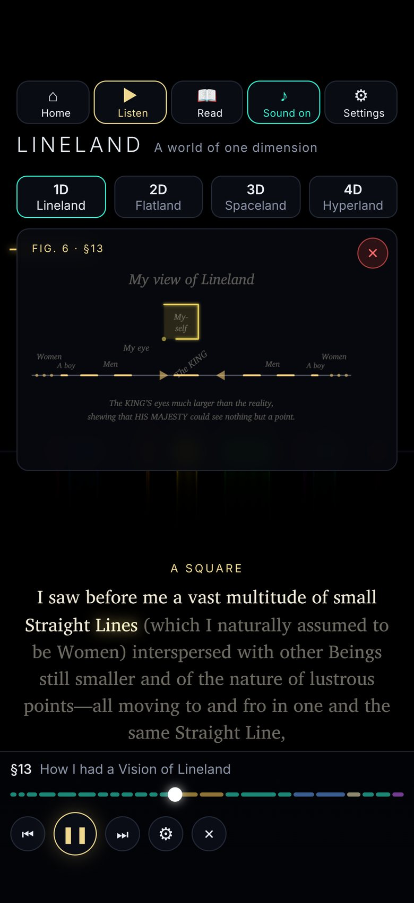

1D
Lineland
A single beam of light, whose people can never pass one another. Walk along it and hear a tone rise as your neighbours draw near, and meet the King who can see nothing but a Point, with Abbott’s own figure of his kingdom drawn in light beside the words.
